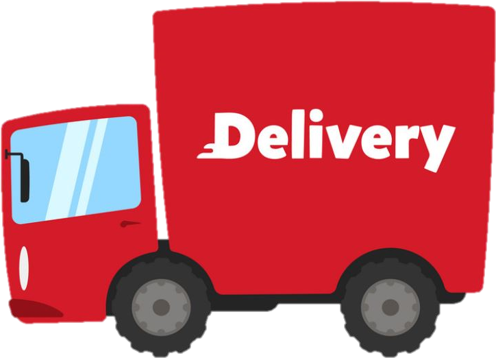
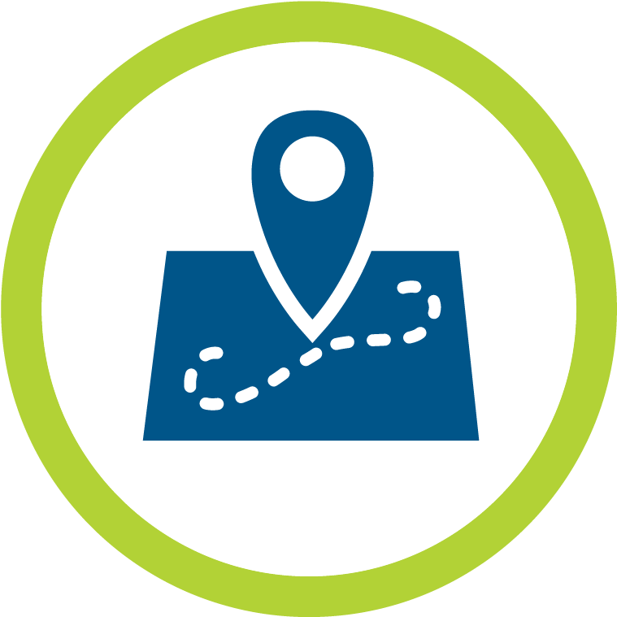
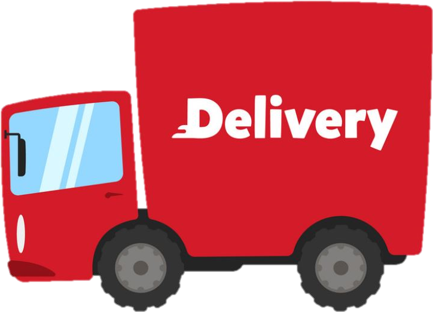
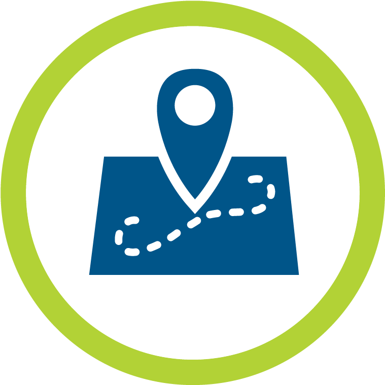

E-Wet Mart is an exclusive platform to get all your daily intakes from Vegetables, Fruits to Animal Husbandary products. We are the platform that vanquishes the middle man and connects the provider and consumer directly by their location accessibility. We host this site to be user-friendly and provides all the needed services to the consumers. Address details of providers are available, so the consumers who want to go in person and buy can be done.
Freelancers are hired to check the provider's credibility on time-basis to assure consumers about the products they receive.
An early access from morning 6 to evening 6 delivery service will be provided to all the consumers and the truck which is being used to deliver is made specifically to deliver all types of products - ranging from meat to greeneries. The product will reach you as fresh as a hot cup of coffee.
Vanquishing meddling man is making the consumers get products at more affordable and economical price. Eliminating the "it's Costly" barrier from the system. The providers will get enough revenue from the products and consumers will get products economically.
GPS Tracking System is available in our delivery trucks to provide an extra assurity to the consumers and to locate our trucks from administrator point of view.
The payment can be done either through online or offline. All modes of online payment is available so that consumers can choose the one they want to. Payment done through internet is secured by payment gateways to ensure the safety of money to the consumers.
 


